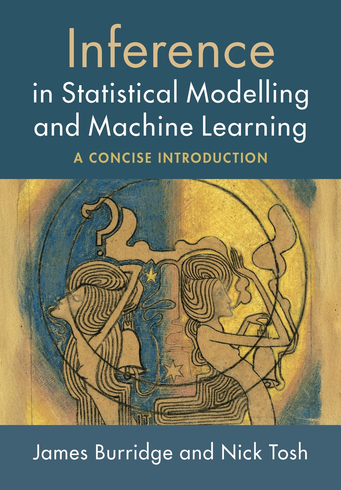

This is the companion website for the book "Inference in Statistical Modelling and Machine Learning" by James Burridge and Nick Tosh, published by Cambridge University Press. Click the links above to access companion notebooks to each chapter, solutions to exercises, and lecture slides for a short course based on the book.
The book is a practical guide to "risky inference", that is, making guesses when the truth is not certain. Risky inference problems lie at the heart of many fields, from the hard sciences, through engineering, social science, statistics, and artificial intelligence. Our goal is to provide readers with a broad practical introduction to the core tools and ideas, giving them the foundations to explore more advanced techniques, and to apply inference tools in their own fields. The book can be purchased in hard or electronic copy from the usual places. With permission from Cambridge University Press, we are also making a complete pdf version available for free from this site (click the cover image below).

Clicking a link below opens the notebook in Google Colab, where you can run it interactively in your browser with no installation required. A Google account is needed for Colab. If you prefer to run notebooks locally in Jupyter, you can download them directly from our GitHub repository, and download the accompanying data files from the data folder.